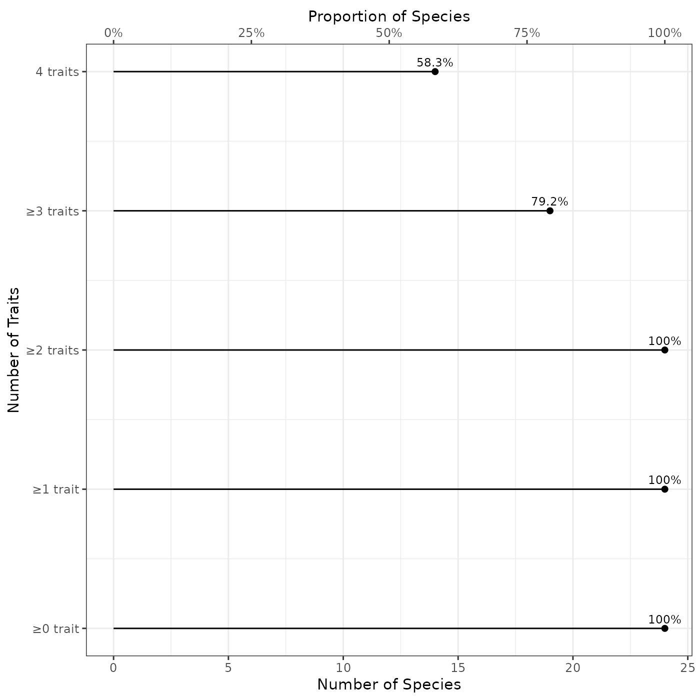
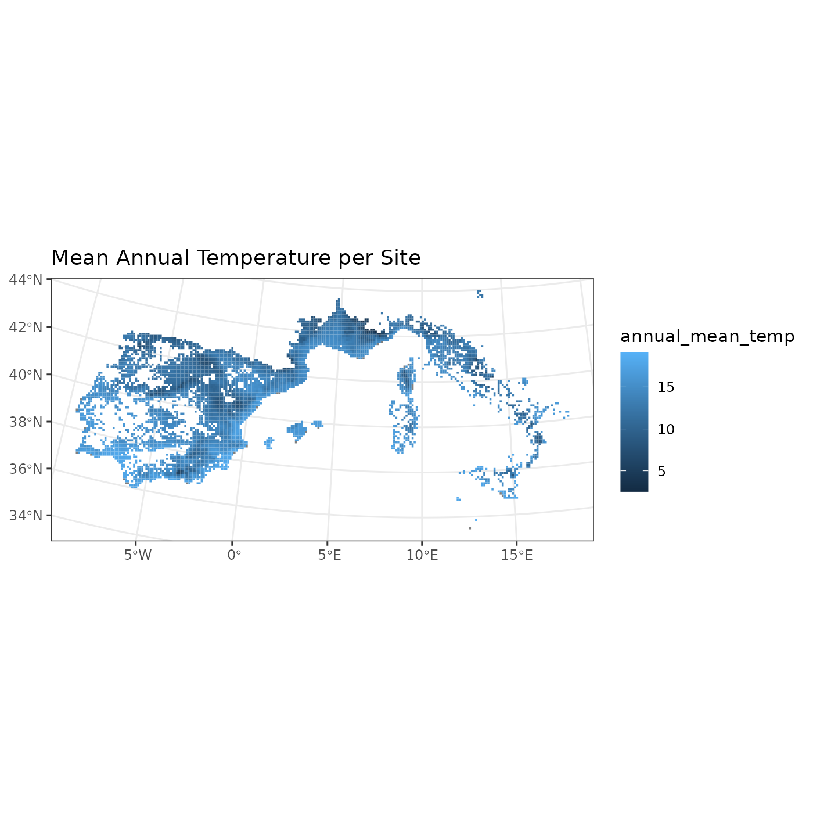
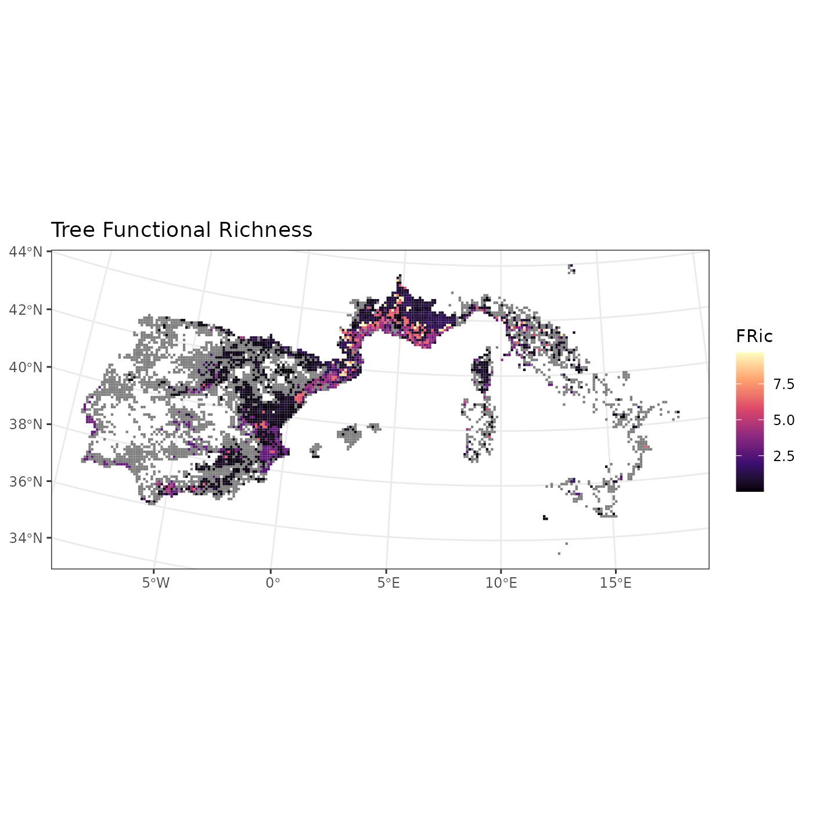

The aim of the funbiogeo package is to help users
streamline the workflows in functional
biogeography (Violle et al.
2014). It helps filter sites, species, and traits based on their
trait coverages. It also provide default diagnostic plots and standard
tables summarizing input data. This vignette aims to be an introduction
to the most commonly used functions.
The vignette is a worked through real world example of a functional
biogeography workflow using the internal dataset provided in
funbiogeo and derived from the WOODIV database (Monnet et al. 2021).
library("funbiogeo")
library("ggplot2")
library("sf")
#> Linking to GEOS 3.12.1, GDAL 3.8.4, PROJ 9.4.0; sf_use_s2() is TRUEProvided data
We are interested in mapping the functional traits of 26 Rosacean tree species of Western European Mediterranean regions.
The functions in funbiogeo mostly leverage three
different objects:
- the species x traits
data.frame, which describes the traits (in columns) of the species (in rows) (species_traitsdataset infunbiogeo); - the site x species
data.frame, which describes the presence/absence, the abundance, or the cover of species (in columns) across sites (in rows) (site_speciesdataset infunbiogeo); - the site x locations object, which describes the
physical location of sites through an
sfobject (site_locationsdataset infunbiogeo).
You can load the example data using the
data(..., package = "funbiogeo") call:
data("woodiv_site_species", package = "funbiogeo")
data("woodiv_locations", package = "funbiogeo")
data("woodiv_traits", package = "funbiogeo")In the following sections we’ll describe in detail these three provided datasets in the package.
Species x Traits
This object contains traits values for multiple traits (as columns)
for studied species (as rows). It should be a data.frame.
The first column should contain species names and the other columns
contain trait values.
Note that we’ll be talking about species throughout
this vignette and in the arguments of funbiogeo, but the
package doesn’t make any assumption on the biological level. It can be
individuals, populations, strains, species, genera, families, etc. The
important fact is that you should have trait data for the level at which
you want to work.
Let’s examine the species_traits data included in the
package:
| species | plant_height | seed_mass | sla | wood_density | |
|---|---|---|---|---|---|
| 1 | AALB | 49.64162 | 67.86692 | 7.483978 | 0.4490821 |
| 3 | ACEP | 25.87500 | 64.70375 | NA | NA |
| 4 | ANEB | 15.00000 | NA | 3.420603 | NA |
| 5 | APIN | 27.33333 | 55.52000 | 3.420603 | 0.4586508 |
The first column "species" contains
species names, while the next four columns contain different traits for
all species.
Let’s look at a summary of the trait dataset:
summary(woodiv_traits)
#> species plant_height seed_mass sla
#> Length:24 Min. : 1.368 Min. : 7.608 Min. : 0.508
#> Class :character 1st Qu.: 8.776 1st Qu.: 14.926 1st Qu.: 3.421
#> Mode :character Median :16.908 Median : 30.188 Median : 4.365
#> Mean :18.779 Mean : 62.245 Mean : 4.773
#> 3rd Qu.:25.531 3rd Qu.: 57.558 3rd Qu.: 5.824
#> Max. :49.642 Max. :626.189 Max. :10.600
#> NA's :1 NA's :7
#> wood_density
#> Min. :0.2796
#> 1st Qu.:0.4500
#> Median :0.4642
#> Mean :0.4948
#> 3rd Qu.:0.5300
#> Max. :0.6488
#> NA's :7Note that to use your own species by traits data.frame,
it should follow similar structure with the first column being named
"species" and the other ones containing
traits.
Site x Species
This object contains species occurrences/abundance/coverage at
sites
of the study area. It is a data.frame. The first column,
"site", contains site names while the
other columns contains the abundance of each species across sites.
Note that here we are talking about sites in an abstract way. These can be plots, assemblages, of whatever collections of species you’re interested in.
The package funbiogeo comes with the example dataset on
Rosacean tree species of Western European Mediterranean regions
site_species. Let’s look at it:
| site | AALB | ACEP | APIN | CLIB | CSEM |
|---|---|---|---|---|---|
| 41152325 | 1 | 0 | 0 | 0 | 0 |
| 40852325 | 1 | 0 | 0 | 0 | 0 |
| 40852345 | 1 | 0 | 0 | 0 | 0 |
| 42552105 | 1 | 0 | 0 | 0 | 0 |
| 41152315 | 1 | 0 | 0 | 0 | 0 |
| 37452365 | 1 | 0 | 0 | 0 | 0 |
| 36952225 | 1 | 0 | 0 | 0 | 0 |
| 37152185 | 1 | 0 | 0 | 0 | 0 |
| 39852335 | 1 | 0 | 0 | 0 | 0 |
| 39652375 | 1 | 0 | 0 | 0 | 0 |
The example dataset contains the occurrence of the 26 Rosaceae tree species across 4,723 sites (grid cells of 10 x 10 km resolution).
Note that to use your own site by species data.frame, it
should follow similar structure with the first column being named
"sites" and the other ones containing
presence information of species across sites.
Site x Locations
This object contains the geographical location of the sites. It
should be an sf object from the sf
package. These are spatial R objects that describe geographical
locations. The sites can have arbitrary shapes: points, regular
polygons, irregular polygons, or even line transects! To make sure that
your data is well plotted you should specify the Coordinate Reference
System (CRS) of this object.
The package funbiogeo comes with the example dataset
site_locations defining the location of the 4,723 sites
(grid cells of 10 x 10 km resolution) as polygons. It contains the names
of the site in its first column
"site":
head(woodiv_locations)
#> Simple feature collection with 6 features and 2 fields
#> Geometry type: POLYGON
#> Dimension: XY
#> Bounding box: xmin: 2630000 ymin: 1750000 xmax: 2650000 ymax: 1970000
#> Projected CRS: ETRS89-extended / LAEA Europe
#> site country geometry
#> 1 26351755 Portugal POLYGON ((2630000 1750000, ...
#> 2 26351765 Portugal POLYGON ((2630000 1760000, ...
#> 4 26351955 Portugal POLYGON ((2630000 1950000, ...
#> 5 26351965 Portugal POLYGON ((2630000 1960000, ...
#> 6 26451755 Portugal POLYGON ((2640000 1750000, ...
#> 7 26451765 Portugal POLYGON ((2640000 1760000, ...Note that to use your own site locations object, it should follow
similar structure, being an sf object with the first column
being named "sites".
Visualizing the data (diagnostic plots)
funbiogeo provides many functions to display the data to
help the user select specific traits, species, and/or sites. We are
going to detail some of them in this section (see the full list in the
diagnostic plots vignette. We call
them diagnostic plots because they help us to have an overview
of our dataset prior to the analyses.
Trait completeness per species
A first way to visualize our data.frame is to look at
the proportion of species with non-missing traits using the
fb_plot_number_species_by_trait() function. It takes the
species by trait data.frame as input.
fb_plot_number_species_by_trait(woodiv_traits)
This plot shows us the number of species (along the x-axis) in
function of the trait name (along the y-axis). The number of concerned
species is shown at the bottom of the plot while the corresponding
proportion of species (compared to all the species included in the trait
dataset) is indicated as a secondary x-axis at the top. The proportion
of species concerned is shown at the right of each point. For
example, in our example dataset, 82.6% species have a non-NA adult body
mass.
The function also includes a way to provide a target proportion of species as the second argument. It will display the proportion as a dark red dashed line.
For example, if we want to visualize which traits cover more than 75% of the species:
fb_plot_number_species_by_trait(woodiv_traits, threshold_species_proportion = 0.75)
The top number shows the corresponding number of species.
Number of Traits per Species
Another way to filter the data would be to select certain species
that have at least a certain number of traits. This can be visualized
using the fb_plot_number_traits_by_species() function.
Similarly to the above-mentioned function, it takes the species x traits
data.frame as the first argument:
fb_plot_number_traits_by_species(woodiv_traits)
The plot shows the number (bottom x-axis) and the proportion (top x-axis) of species covered by a specific number of traits (0 to 4 in our example).
Filtering the data
Now that we displayed the diagnostic plots, we can decide thresholds and filter our data for our following analyses.
Filter trait by species coverage
We want to select the traits that are available for at least 75% of
the species. To do so we can use the
fb_filter_traits_by_species_coverage() function. The
function takes the species by traits data.frame and outputs
the same dataset but with the traits filtered (so with less columns).
The second argument threshold_species_proportion is the
threshold proportion of species covered:
# Initial dimension of the input data
dim(woodiv_traits)
#> [1] 24 5
# Filter traits
red_sp_traits <- fb_filter_traits_by_species_coverage(
woodiv_traits, threshold_species_proportion = 0.75
)
dim(red_sp_traits)
#> [1] 24 3
# The reduced data set now has fewer trait columns
head(red_sp_traits)
#> species plant_height seed_mass
#> 1 AALB 49.64162 67.866923
#> 3 ACEP 25.87500 64.703750
#> 4 ANEB 15.00000 NA
#> 5 APIN 27.33333 55.520000
#> 6 CLIB 35.63636 86.872600
#> 7 CSEM 24.69231 7.608125The function outputs a filtered species-traits dataset retaining only
traits covering at least 75% of the species. In the end this keep
two traits: body mass and litter size.
Filter species by trait coverage
Similarly you could filter species by their trait coverage. For
example we would like to make sure that the species we filtered
previously so that they show at least one of the two traits selected
above and thus exclude species for which neither of the traits are
available. We can use the function
fb_filter_species_by_trait_coverage() with the species x
traits data.frame as the first argument and the second
argument the proportion of traits covered by species.
# Filter species with at least 50% of included (two traits)
# at least one trait
red_sp_traits_2 <- fb_filter_species_by_trait_coverage(
red_sp_traits, threshold_traits_proportion = 0.5
)
head(red_sp_traits_2)
#> species plant_height seed_mass
#> 1 AALB 49.64162 67.866923
#> 3 ACEP 25.87500 64.703750
#> 4 ANEB 15.00000 NA
#> 5 APIN 27.33333 55.520000
#> 6 CLIB 35.63636 86.872600
#> 7 CSEM 24.69231 7.608125
dim(red_sp_traits_2)
#> [1] 24 3We thus have selected 2 traits that cover at least 75% of the
initial species list and 127 species which have known values for these
two traits.
Filter sites by trait coverage
Now that we have filtered our traits and species of interest we need
to filter the sites, that contain enough species for which the traits
are available. Similarly to above the function is
fb_filter_sites_by_trait_coverage() it takes as two first
arguments the site x species data.frame and the species x
traits data.frame. The third argument is
threshold_traits_proportion that indicates the percent
coverage of traits to filter each site. Note that this coverage is
weighted by the occurrence, abundance, or cover depending on the content
of the site x species data.frame.
Let’s say here we’re interested in sites for which our species with available traits represent at least 90% of the species present:
# Initial site x species data
dim(woodiv_site_species)
#> [1] 5366 25
# Filter sites with at least 90% species covered
filt_sites <- fb_filter_sites_by_trait_coverage(
woodiv_site_species, red_sp_traits_2, threshold_traits_proportion = 0.9
)
# Filtered sites
dim(filt_sites)
#> [1] 5364 25
filt_sites[1:4, 1:4]
#> site AALB ACEP APIN
#> 1 41152325 1 0 0
#> 2 40852325 1 0 0
#> 3 40852345 1 0 0
#> 4 42552105 1 0 0The output of the function is a site x species
data.frame with selected sites and species. Now we selected
1,268 sites out of 1,505, for our 2 traits and 127 species.
Computing Functional Diversity metrics
The funbiogeo functions helped us filter our data
appropriately with enough available trait information for species and
sites.
We can use the filtered datasets to proceed with our analyses using
other readily available tools for functional diversity indices. This
where you should use your preferred packages to compute functional
diversity indices like fundiversity,
betapart,
or hypervolume.
For the sake of the example we included a function in
funbiogeo to compute Community-Weighted Mean (CWM, Garnier et al. 2004) named
fb_cwm(). The CWM is the abundance-weighted average trait
per site. We’ll be using it in the following section we’ll then show
another example computing functional diversity indices using the
fundiversity package.
Community-Weighted Mean (CWM)
We’re interested to look at the spatial distribution of the average
plant height and seed mass of Rosaceae tree species. To do so, we can
compute the community-weighted mean of both traits. We’ll use the
fb_cwm() function to do so, it takes the site x species
data.frame and species x traits data.frame as
arguments.
# Note that we're reusing our filtered data to compute CWM
cwm <- fb_cwm(filt_sites, red_sp_traits_2)
#> Some species had NA trait values, removing them from CWM computation
head(cwm)
#> site trait cwm
#> 1 26351755 plant_height 12.31767
#> 2 26351765 plant_height 4.88150
#> 3 26351955 plant_height 12.31767
#> 4 26351965 plant_height 13.77575
#> 5 26451755 plant_height 4.88150
#> 6 26451765 plant_height 15.76845It outputs a data.frame with 3 columns: the first one,
site, shows the site name as provided in the input site x
species data.frame, trait which indicates the
trait name on which the CWM is computed, and cwm which
shows the value of the CWM.
Compute functional diversity indices
We can also integrate our filtered datasets in other functional
diversity computation pipeline. We’ll show an example by computing
functional richness with fundiversity.
## To install 'fundiversity' uncomment the following line
# install.packages("fundiversity")
# Functional richness in 'fundiversity' requires all the traits to be known
# so we need to filter the traits
filt_traits <- subset(
red_sp_traits, !is.na(plant_height) & !is.na(seed_mass)
)
# We need to transform species and site names as row names for species-traits
# and site-species data.frames, as required by 'fundiversity'
rownames(filt_traits) <- filt_traits$species
filt_traits <- filt_traits[, -1]
rownames(filt_sites) <- filt_sites$site
filt_sites <- filt_sites[, -1]
# Scale traits
filt_traits <- scale(filt_traits)
# Compute Functional Richness
fric <- fundiversity::fd_fric(filt_traits, filt_sites)
#> Differing number of species between trait dataset and site-species matrix
#> Taking subset of species
#> Warning in fundiversity::fd_fric(filt_traits, filt_sites): Some sites had less
#> species than traits so returned FRic is 'NA'
head(fric)
#> site FRic
#> 1 41152325 1.387675
#> 2 40852325 1.465982
#> 3 40852345 1.485531
#> 4 42552105 1.067421
#> 5 41152315 1.465982
#> 6 37452365 NAWe now have a table with Functional Richness computed for all of our sites.
Putting variables on the map
Map of environmental raster
If we want to display the environment associated with our sites of
interest, we can leverage environmental raster layers, like the mean
annual temperature. Fortunately, we have access to an example raster of
mean annual temperature through funbiogeo. The package
provides a helper function display a raster layer easily (without any
assumption about the projection) named fb_map_raster():
# Read raster
tavg <- system.file(
"extdata", "annual_mean_temp.tif", package = "funbiogeo"
)
tavg <- terra::rast(tavg)
# Map raster
fb_map_raster(tavg) +
scale_fill_distiller("Temperature", palette = "Spectral") +
theme(legend.position = "bottom") +
ggtitle("Mean annual temperature in Europe")
We can also combine that with the annual precipitation information available as an example
library("patchwork")
# Read raster ------------------------------------------------------------------
tavg <- system.file("extdata", "annual_mean_temp.tif", package = "funbiogeo")
tavg <- terra::rast(tavg)
prec <- system.file("extdata", "annual_tot_prec.tif", package = "funbiogeo")
prec <- terra::rast(prec)
# Individual Maps --------------------------------------------------------------
map_temperature <- fb_map_raster(tavg, legend.position = "none") +
scale_fill_distiller("Temperature", palette = "Spectral")
map_precipitation <- fb_map_raster(prec) +
scale_fill_distiller("Precipitation", direction = 1)
# Plot composition -------------------------------------------------------------
(map_temperature / map_precipitation) +
plot_annotation(title = "Europe",
theme = theme(plot.title = element_text(face = "bold"))) &
theme_classic() &
theme(text = element_text(family = "mono"))
This function allows the visualization of a raster in a simple fashion, but it doesn’t tell us anything about the environmental variable at the sites. In the next section we will follow the example of mapping an environmental variable.
Map of average environmental variable in site
To get the average environmental variable in the site we can use the
fb_get_environment() function, it takes as arguments the
site-locations object and an environmental raster from the
terra package. By default, it takes the average of the
raster values per site.
site_mat <- fb_get_environment(woodiv_locations, tavg)
head(site_mat)
#> site annual_mean_temp
#> 1 26351755 NaN
#> 2 26351765 16.44746
#> 3 26351955 16.08605
#> 4 26351965 NaN
#> 5 26451755 16.66498
#> 6 26451765 16.39656The variable names in columns are based on the names of the provided
raster. To put these values on the map we can use the
fb_map_site_data() function, which allows mapping arbitrary
site-level variables. It takes three needed arguments: the first of
which, site_locations, which is the sf object
describing sites’ geographic locations; the second argument is
site_data, which is a data.frame giving
additional data indexed by site; and selected_col, which is
a character giving the name of the column to plot from the
site_data argument.
We can thus plot the mean annual temperature of sites through the following commands:
fb_map_site_data(woodiv_locations, site_mat, "annual_mean_temp") +
labs(title = "Mean Annual Temperature per Site")
Map of functional diversity indices
We can leverage the same functions to map our functional diversity indices. For example, with the body mass CWM:
body_mass_cwm <- subset(cwm, trait == "plant_height")
fb_map_site_data(woodiv_locations, body_mass_cwm, "cwm") +
scale_fill_viridis_c(trans = "log10") +
labs(title = "Tree height CWM")We can do similarly for functional richness:
fb_map_site_data(woodiv_locations, fric, "FRic") +
scale_fill_viridis_c(option = "magma") +
labs(title = "Tree Functional Richness")
Conclusion
This concludes our tutorial to introduce funbiogeo. The
packages contains many more features, especially diagnostic plots, which
are explained in detail in a dedicated
vignette. There is also a specific vignette about transforming raw data from long to wide
format. Finally, if you’re interested in learning about up-scaling
your sites, you can refer to the specific
vignette